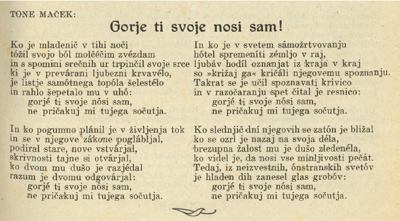

Smernice TEI obravnavajo besedila glede na vrsto dokumenta in ne glede na žanr. Zato Smernice TEI predstavljajo poglavje o verzu, ne o poeziji. Dokumentni tip ni vgrajena lastnost dokumenta, temveč formalizirana analiza dokumenta s strani subjektivnega ustvarjalca, kot je raziskovalec, urednik ali kodirnik, ki besedilo identificira kot prozo, pesem ali dramo skozi lastno subjektivno razmišljanje.
Primer poezije. Maček, Tone, „Gorje ti svoje nosi sam!“ Pod Lipo I, 1924, 65, https://www.sistory.si/media/uploads/2024-04-04/7a57c3a7d32eb10dbf1b.pdf
Poezijo je mogoče označevati na več načinov, ki so vsi legitimni. Lahko so označeni kot proza
Najosnovneše označevanje poezije je označevanje teksta v prozi v elementu <p> v katerem je besedilo ločeno s praznim elementom <lb> (line break), ki označuje začetek nove vrstice.
<body><!-- primer poezije kot proze --><!-- ... --><head>Gorje vi svoje nosi sam!</head><p>Ko je mladenič v tihi noči<lb/>tožil svojo bol molčečim zvezdancih<lb/>in s spomini srečnih ur trpinčil svoje srce<lb/>ki je
v prevazani ljubezni krvavelo,<lb/>je listje samotnega topola šelestelo<lb/>in rahlo šepetalo mu v uho:<lb/>gorje ti svoje nosi sam,<lb/>ne pričakuj mi
tujega sočutja.<lb/>In ko pogumno planil je v življenja tok<lb/>in se v njegove zakone poglabljal,<lb/>podizal stare, nove vstvarjal,<lb/>skrivnosti
zajne si otvarjal,<lb/>ko dvom mu dušo je razjedal<lb/>razum je dvomu odgovarjal<lb/>gorje vi svoje nosi sam,<lb/>ne pričakuj mi tujega sočutja.<lb/>In
ko je v svetem samožrtvovanju<lb/>hotel spremeniti zemljo v raj,<lb/>ljubav hodil oznanjat iz kraja v kraj<lb/>so »krišaj ga« kričali mjegovenu.
spoznanju,<lb/>Takrat se je učil spoznavati krivico<lb/>in v zazočaranju spev čital je resnico:<lb/>goje ti svoje nosi sam,<lb/>ne pričakuj mi tujega
sočuvja.<lb/>Ko slednjič dni njegovih se zaton je bližal<lb/>ko se ozrl je nazaj na svoja dela,<lb/>brezupna žalost mu je dušo zledenela,<lb/>ko videl
je, da nosi vse minljivosti pečat.<lb/>Tedaj, iz neizvestnih, onstranskih svetov<lb/>je hladen dih zanesel glas grobov:<lb/> gorje vi svoje nosi
sam,<lb/>ne pričakuj mi tujega sočuvja.«</p><!-- ... --></body>
Besedilo v vrsticah je mogoče označiti tudi kot seznam.
<body><!-- primer poezije kot <list> --><list><head>Gorje ti svoje nosi sam</head><item>Ko je mladenič v tihi noči</item><item>tožil svojo bol molčečim zvezdancih</item><item>in s spomini srečnih ur trpinčil svoje srce</item><item>ki je v prevazani ljubezni krvavelo,</item><item>je listje samotnega topola šelestelo</item><item>in rahlo šepetalo mu v uho:</item><item>gorje ti svoje nosi sam,</item><item>ne pričakuj mi tujega sočutja.</item><!-- nadaljevanje elementov <item> --></list><!-- ... --></body>
Za poezijo lahko uporabimo tudi element <l> za označevanje vrstic pesmi, ki jih lahko združimo v skupine v elementu <lg> (line group).
<body><!-- primer poezije v vrsticah <l> združenih v <lg> --><lg><head>Gorje ti svoje nosi sam</head><l>Ko je mladenič v tihi noči</l><l>tožil svojo bol molčečim zvezdancih</l><l>in s spomini srečnih ur trpinčil svoje srce</l><l>ki je v prevazani ljubezni krvavelo,</l><l>je listje samotnega topola šelestelo</l><l>in rahlo šepetalo mu v uho:</l><l>gorje ti svoje nosi sam,</l><l>ne pričakuj mi tujega sočutja.</l><!-- nadaljevanje elementov <l> --></lg><!-- ... --></body>